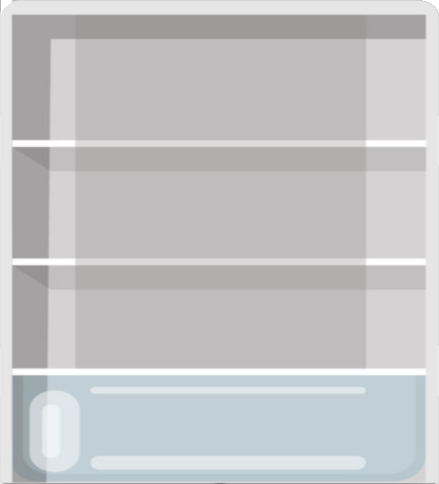
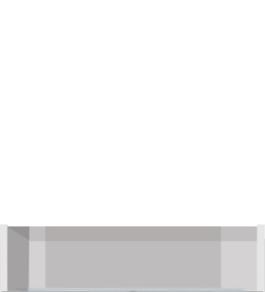

<div id="main">
    <!-- REMARCAR LA FIGURA -->
    <figure id=figura appStyleGetter [height]="height" [width]="width">
        <map name=recortes id=recortes>
              <!--pescado-->
              <area shape="rect"
              [attr.coords]="mapCoorPescado" class="pointer">

      
          
      
          <!--IMPORTANTE CAPA ARRIBA CUANDO SE SELECIONA ALGO-->
        
        <!--cajon abierto-->
        
        
        </map>

          <!--USA EL MAPS: ES TRANSPARENTE-->

            <!--Imagenes de los alimentos-->
            <div *ngFor="let alimento of alimentos">
                 0"
                src="{{alimento.img.main.rutaOk}}"
                class="imagen" usemap=#recortes> 
    
                 
            </div>
           <!--Fin Imagenes de los alimentos-->
      
      </figure>
    <!--
      <!-- AREA DE LA FIGURA 
      <svg xmlns="http://www.w3.org/2000/svg" version="1.1" >
          <defs>
              <!--manzana
              <clipPath id=A1>
                  <circle [attr.points]="mapCoorManzana"></circle>
              </clipPath>
              <clipPath id=A2>
                  <polygon [attr.points]="mapCoorEFGH" ></polygon>
              </clipPath>
              <clipPath id=A3>
                  <polygon [attr.points]="mapCoorIJKL" ></polygon>
              </clipPath>
              <clipPath id=A4>
                  <polygon [attr.points]="mapCoorMNOP" ></polygon>
              </clipPath>
              
               
          </defs>
      </svg>
    -->
    <div id="navegadorFridge">
        <button (click)="abrirCajon()"
        class="flex-icon"
        mat-stroked-button>
            <mat-icon>home</mat-icon>
            <p class="p">Cajon1</p>
        </button>
        <button mat-stroked-button color="primary">
            <mat-icon>home</mat-icon>
        </button>
        <button mat-stroked-button color="accent">
            <mat-icon>home</mat-icon>
        </button>
        <button mat-stroked-button color="warn">
            <mat-icon>home</mat-icon>
        </button>
        <button mat-stroked-button disabled>
            <mat-icon>home</mat-icon>
        </button>
        <a mat-stroked-button routerLink="../">
            <mat-icon>exit_to_app</mat-icon>
        </a>
    </div>
</div>